One aspect of reviving the XMods parts that I have involves figuring out what I need to fix to get the shorter chassis running again. I had originally taken it apart to figure out how it all worked many years ago, so I'm starting from a partial deconstruction of the chassis. At this point, I'm hoping for a bit of a refresher on the mechanics and to hopefully understand what parts I'd need to hijack or modify to get this thing back running again if the main board isn't working as intended. After a little breaking, I'm going to put it back together and power it up to see what's functioning.
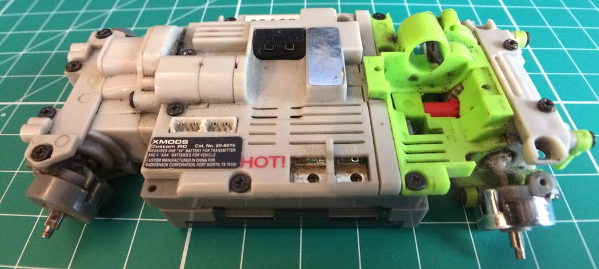
Here's an example of a working chassis. This is a longer version meant for use with the 2005 Ford Mustang body.
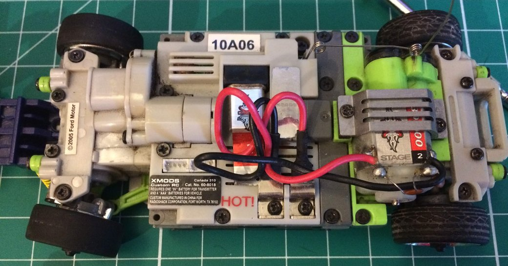
Drivetrain¶
The rear drivetrain isn't too complicated, although I will need to find the right motor and gearing to get it hooked up again. I will also need to find a pair of special screws used to mount the hubs so that they can flex up and down.
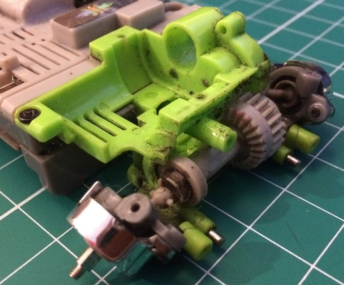
Front Drivetrain¶
Moving to the front of the vehicle, we have a similar setup, except that the hubs also allow for the mounting of the steering rack (which itself is currently missing).
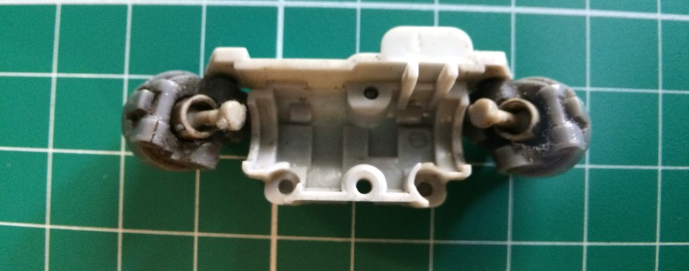
This chassis has a front differential because it has the AWD kit installed. The geometry of the differential is missing an embedded gear so it can be more compact than the rear differential which is driven directly from the motor.
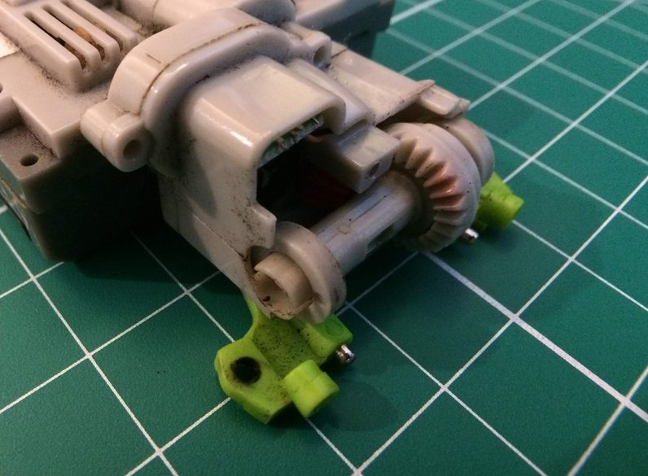
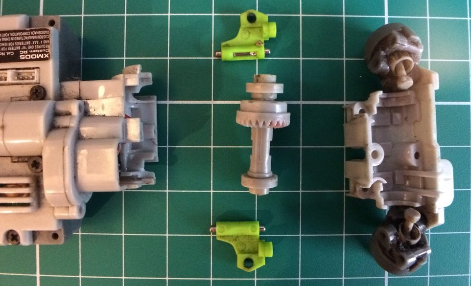
Steering¶
Looking inside the front differential, we can see the pinion gear at the head of the driveshaft and the steering position sensor. Perhaps the most interesting discovery of this disassembly was that the steering is performed through some sort of feedback instead of via an open-loop command to a servo.
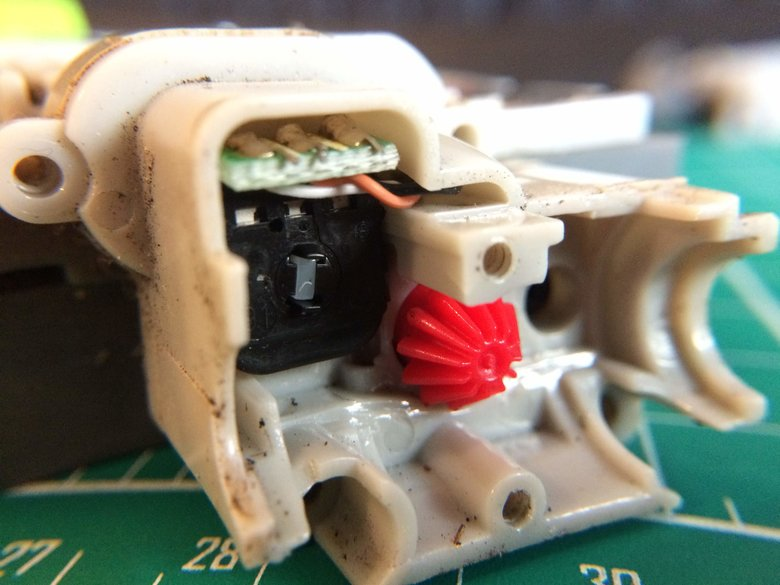
There is a special part that sits on the other side of the steering sensor which is used to actuate the steering rack. Its top half is also geared to connect to the rest of the steering geartrain.
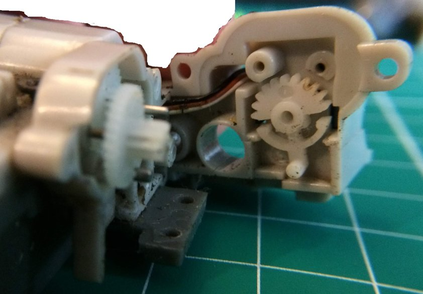
Here we can see that the steering motor goes through three reductions: two from the motor to the exposed gear and then one to the special half gear that connects to the steering position sensor.
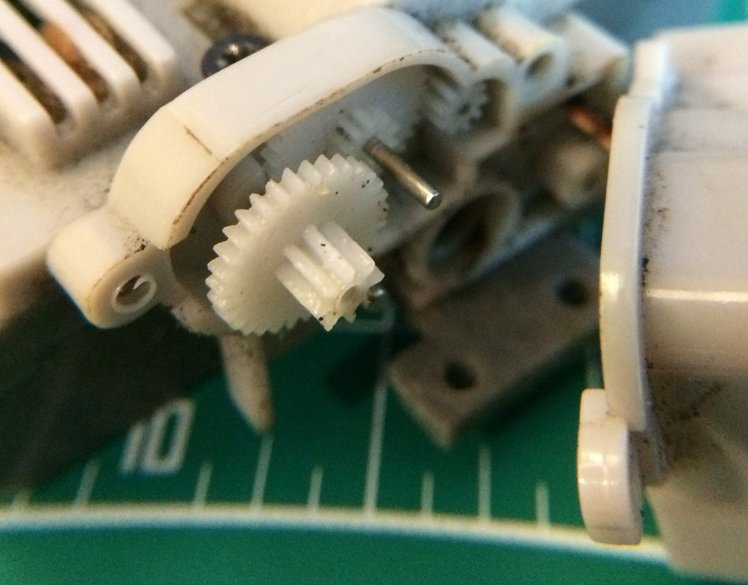
Taking a step back, we can see that the steering motor is actually molded into the chassis. It is far less exposed than the rear motor, which is designed for easy substitution. Modifications here will be more intruisive than with the drive motor, which has its leads intentionally designed for easy connecting and disconnecting to the screw-pads (bottom center).
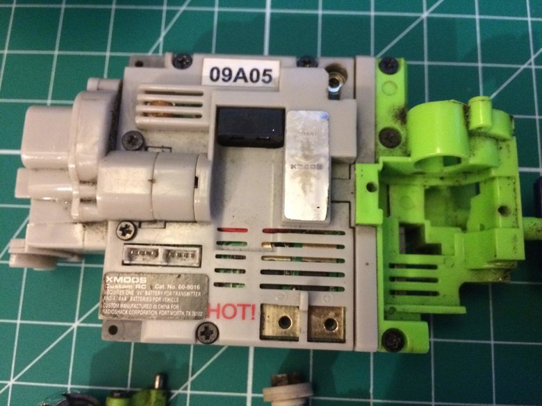
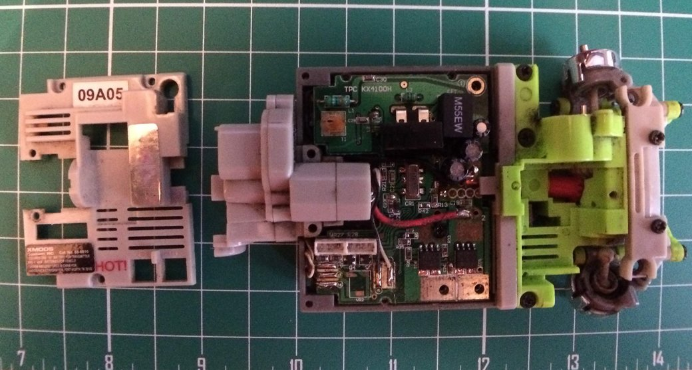
Electronics¶
After some unscrewing and unclipping, we can finally expose the steering motor. It doesn't look as beefy as the drive motor, but it's also going through a number of reductions and shouldn't be taking as much load anyway.
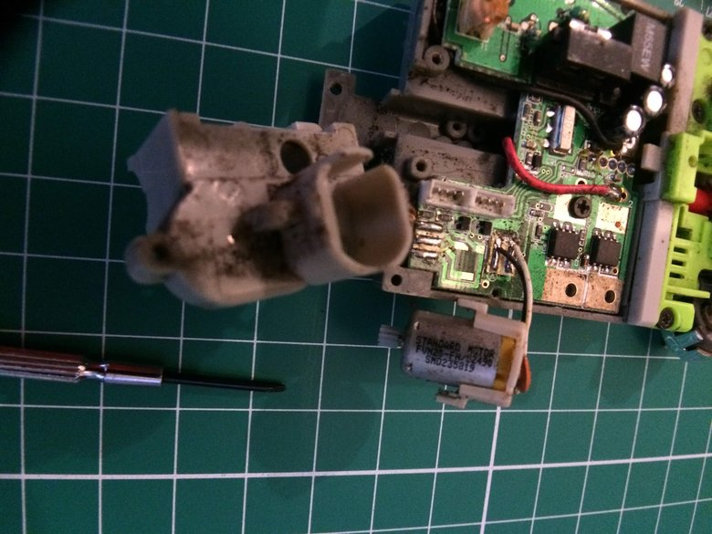
The motor itself doesn't appear to be anything special: "Standard Motor". A quick search for the designation "FVN26-FN/5Z490 SMD235819" didn't turn anything up, I'm assuming the part is a relatively generic DC brushed motor.
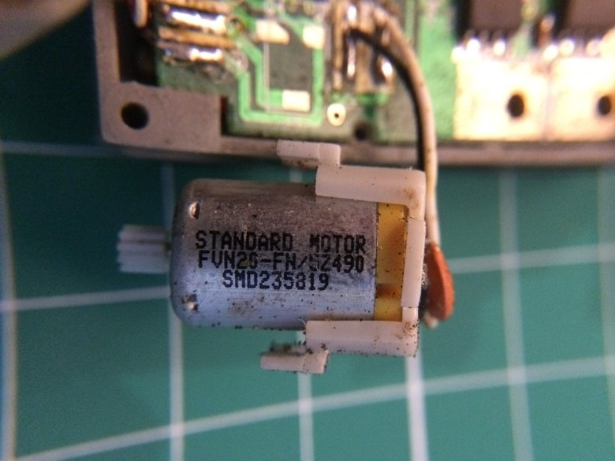
Main Board¶
Taking a closer look at the board, a couple of the components might be identifiable:
- The M55EW part appears to be a 0.455 MHz signal filter
- Under the M55EW is the connector for the crystal that's used to set the remote control frequency
- The pad in the top left is where the antenna connects
- The silver 5 00 box marked CR1 is a diode according to this blog
- I'd guess the black boxes close to the motor output pads are FETs for PWM control of the drive motor
- The white connectors on the bottom right are power outputs for connecting ground effects and light kits. Perhaps they may be of some use for hacking together LED headlights
- The steering motor itself is soldered in place via its two leads at the bottom right
- Near the leads is a part marked VR2, which is likely a voltage regulator for the steering motor. Given that its the second part, I'm guessing there may also be a similar regulator for the main drive motor.
- The battery connections are the thick insulated leads that come from under the board near the steering motor
- Common Components:
- R: Resistor
- C: Capacitor
- L: Inductor
There is a physical layout schematic for first generation XMods that may be of some help, but the design is quite different. It included multiple boards and used a servo for steering.
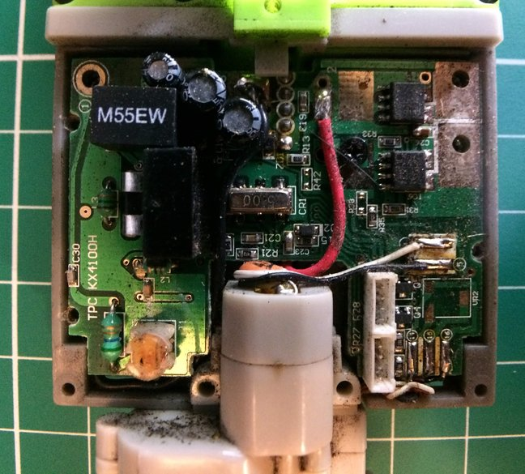
With a better close up view, I might be able to identify the drive motor FETs.
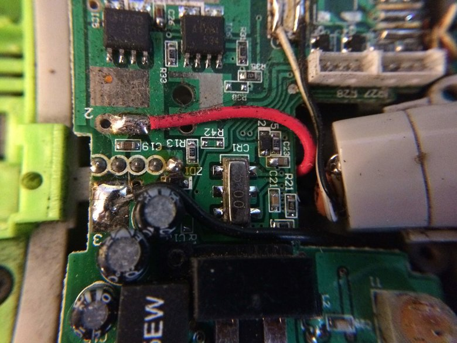
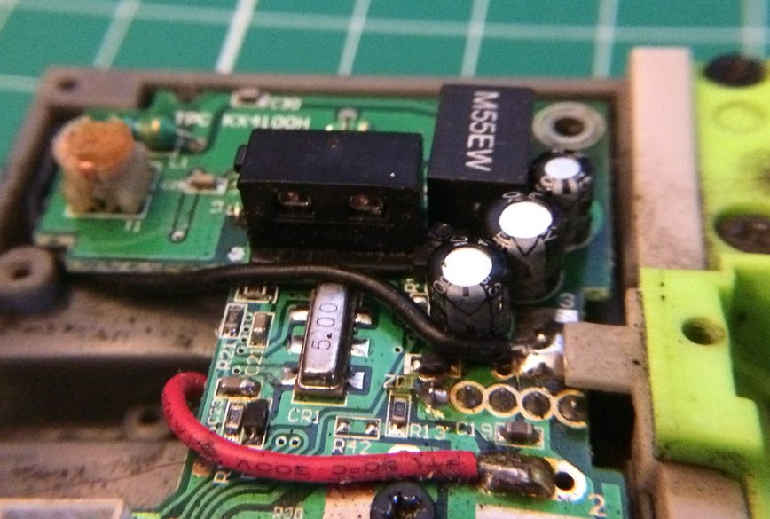